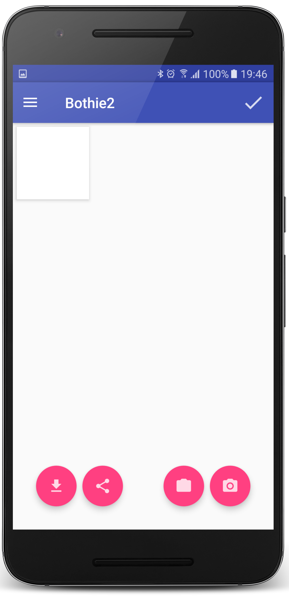
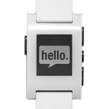

Apps
Bothie2
Photography
Bothie2 is an app built to take full advantage of the dual-camera setup found in almost every modern phone. It allows you to take a photo with each camera, and inset one within the other - putting the photographer into the photo.
Download
Bothie2 is available on Google Play right now:
Features
- Take a photo with either camera.
- Pan and zoom the main photo.
- Drag and place the inset.
- Save to your gallery or share to your friends.
Street-Face
Smart watch app
Street-Face is a Pebble watch app for anyone on the go who needs fast, helpful geo information in a hurry!
Download
Pebble users - download it from the Pebble app store right now!
Features
- Tracks your location for you privately.
- Shows the nearest street address.
- Flick wrist to update.
- Unattended, updates quietly in the background.
- Create checkpoints with time and location.
- Review the past 24 hours of checkpoints from your wrist.
- Adds checkpoints to your Pebble TimeLine for review later.
- Does not share your data.
Uses
- Police officers often need a good location in a hurry!
- Create checkpoints to help you review your actions during the day.
- Create checkpoints to record times and locations of significant events.
 Chatbot Charlie
Chatbot Charlie
Intelligent system
Charlie is a prototype chat-bot designed to help seek out answers in the Registry of Questions held by EFSA (the European Food Safety Authority).
Front-Line Tech Ltd built the mobile component for Charlie - an entry in the 2016 app-building competition for EFSA in collaboration with developers and designers from the civic tech industry.
Charlie was shortlisted, and demoed in Parma on 24 September 2016.
Download
You can try out Charlie right now on your iPhone, iPad or Android device - just join our demo team on HockeyApp:
Features
The app runs on both Android and iOS and can answer a range of questions expressed in natural language. It allows users to explore EFSA's registry of questions (as found in our snapshot, taken September 2016), and can display timelines and data for petitioners, mandates, questions, and tags created through semantic analysis of questions held in the system.
Try it out...
Here are a few sample questions you can ask Charlie:
- Between the January 19th 2000 and July 7th 2016, which unit or panel dealt with questions asked by Esseco SRL?
- Which substances have been asked by Monsanto in 2014?
- Can you show me questions about thyme asked between July 1996 and October 2016 dealt with by the Nutrition unit?
- Did Monsanto ask any question about Maize in 2016?
- Can you list all questions asked by BASF in 2004?
- List all questions about GMO.